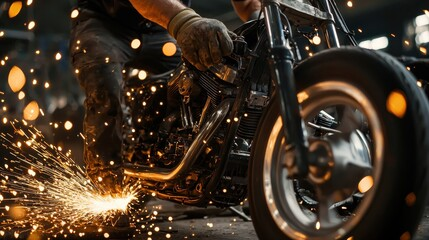

About Us
Local mechanics for everyday riders.
Ayya Two Wheelers Workshop supports bike and scooter owners across Madurai with dependable service, practical repair advice, and honest handling from check-in to delivery.
9.30 AMOpening Time
6 DaysWeekly Service
Multi BrandBike Support
